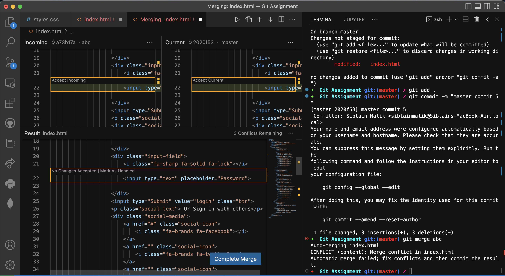

git init (this command Initialize the git in the folder)
git status (this command show the status of commits)
git add . (this command add all the files in the folder)
git add filename (this command add the specific file in the folder)
git commit -m "message" (this command commit the changes in the folder)
git log (this command show the log of commits)
git branch branchName (this command create a new branch)
git branch (this command show the list of branches)
git checkout branchName (this command switch to the specific branch)
git merge branchName (this command merge the specific branch with the current branch)
git merge branchName (this command merge the specific branch with the current branch)
in merge conflict we have to resolve the conflict manually,
it occurs when the same line of code is changed in both branches
merge editor is used to resolve the merge conflict
